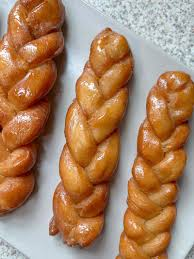

Koeksisters Recipe

Description
Few things can compare to the South African classic!
This is surely a recipe to pass down
Ingredients
Syrup
- 250ml Water
- 625ml White Sugar
- 12.5ml Lemon Juice
- 5ml Vanilla Essence
Dough
- 375ml Cake Flour
- 22ml Baking Powder
- 1ml Salt
- 20g Butter or Margarine
- 150ml Milk
- 750ml Canola Oil
Steps
- Put the water and sugar in a pot and bring to boil on low heat. Stir frequently until sugar is completely dissolved. Boil for 7min.
- Remove the pot from the stove and stir in the lemon juice and vanilla essence. Put into the fridge.
- Mix the flour, salt, and baking powder thoroughly in a mixing bowl. Break the butter or margarine into small pieces and add to the flour mixture. Add the milk. Mix well until a dough is formed.
- Roll dough out to a thickness of 5mm. Cut the dough into 10mm strips. Take 3 strips and join their ends on one side. Braid the strips to desired length and join other ends.
- Heat the oil iin a pot until fairly hot. Place about 3 koeksisters at a time in the oil and fry both sides until a golden-brown colour. As you remove the koeksisters from the oil. put them directly into the syrup from the fridge. NOTE: Return syrup to fridge between each soaking
- Remove the koeksisters from the syrup and allow excess syrup to drip off. Place them in the fridge to cool and then eat!